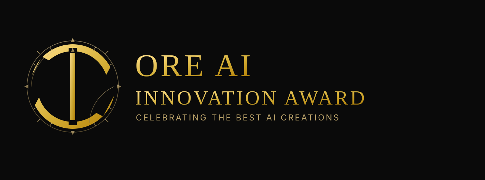
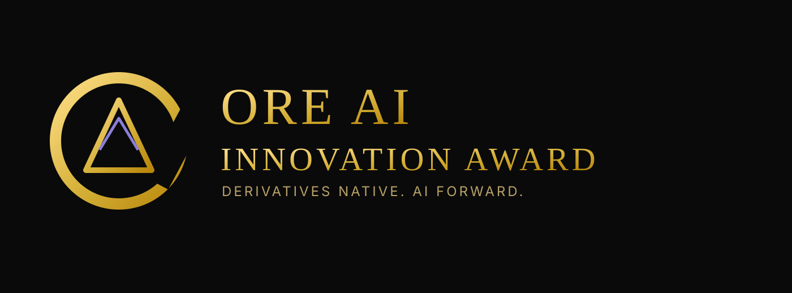
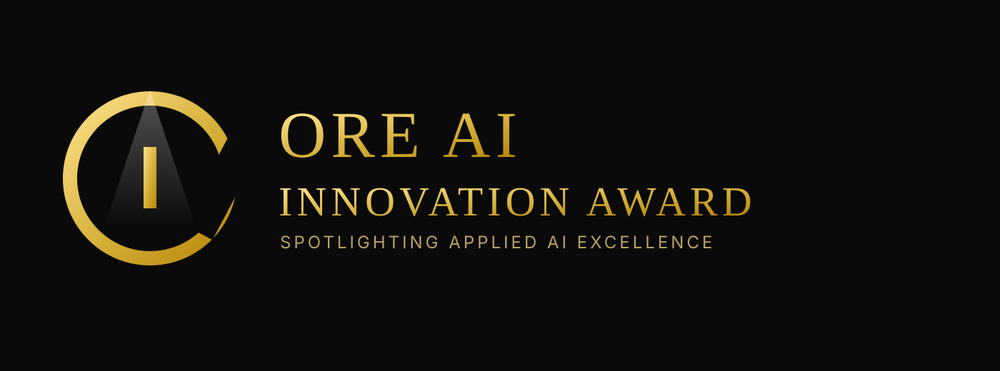
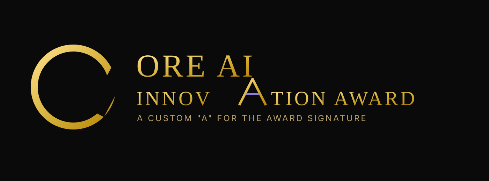
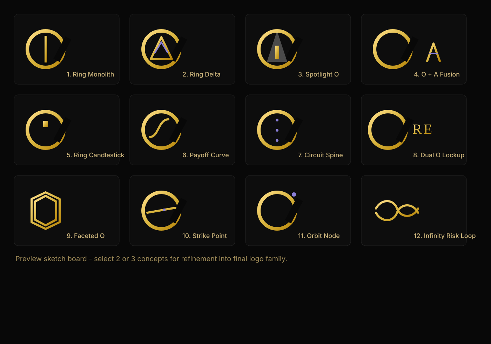
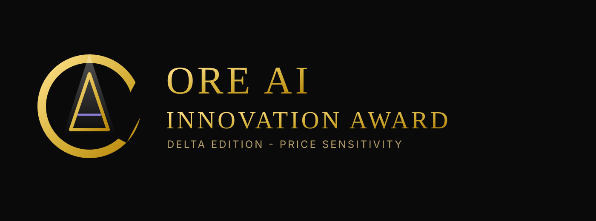
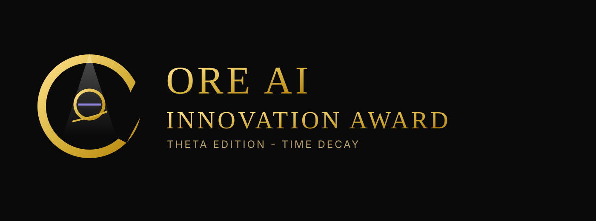
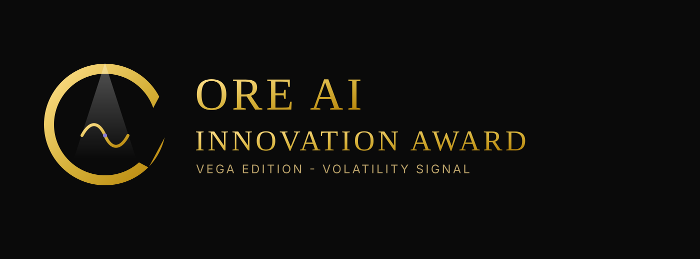

Concept Board - Oscar-Inspired ORE Directions
Keep current colors. Explore negative-space symbolism tied to ORE, finance, and AI.
01 - Ring Monolith

Iconic + instrument-inspired (Da Vinci calibration cues).
02 - Ring Delta

Most explicit derivatives/quant language.
03 - Spotlight O

Closest to award ceremony stage mood.
04 - O + A Fusion

Strong custom wordmark potential.
All 12 Symbol Sketches

Fast comparative board for semantic fit: ORE, markets, AI, derivatives.
Greek-Focused Spotlight Variants
05 - Spotlight Delta

Most universal derivatives signal.
06 - Spotlight Theta

Most quant-specific and technical.
07 - Spotlight Vega

Most dynamic and AI-motion friendly.
Ring-Monolith Instrument Round (15 Variants)
Open ring-monolith-variants/preview-15-variants.html to review all navigation-instrument variants with dual ORE-style ring openings.
Master-Instrument V2 (15 Variants)
Open master-instrument-v2/preview-15-variants.html to review the expanded motif round (magnifier, sinusoidal, stock structures, Fourier-like, binary, C++, Greeks).
Master-Instrument V3 (Integrated Concepts)
Open master-instrument-v3/preview-board.html for the rebuilt round where the ideas reshape the core mark directly instead of being layered on top.